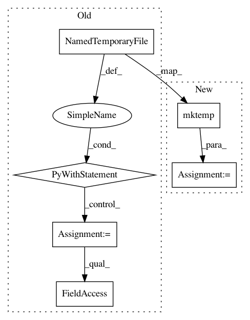

60a81d88434b3eed8be6525754a8c0e78b6cd0e7,nilearn/plotting/tests/test_img_plotting.py,,test_save_plot,#,203
Before Change
kwargs_list = [{}, {"display_mode": "x", "cut_coords": 3}]
for kwargs in kwargs_list:
with tempfile.NamedTemporaryFile(suffix=".png") as fp:
display = plot_stat_map(img, output_file=fp.name, **kwargs)
assert_true(display is None)
display = plot_stat_map(img, **kwargs)
with tempfile.NamedTemporaryFile(suffix=".png") as fp:
display.savefig(fp.name)
After Change
assert_true(display is None)
display = plot_stat_map(img, **kwargs)
filename = tempfile.mktemp(suffix=".png")
try:
display.savefig(filename)
finally:
os.remove(filename)
In pattern: SUPERPATTERN
Frequency: 4
Non-data size: 6
Instances
Project Name: nilearn/nilearn
Commit Name: 60a81d88434b3eed8be6525754a8c0e78b6cd0e7
Time: 2015-11-03
Author: alexandre.abadie@inria.fr
File Name: nilearn/plotting/tests/test_img_plotting.py
Class Name:
Method Name: test_save_plot
Project Name: nilearn/nilearn
Commit Name: 60a81d88434b3eed8be6525754a8c0e78b6cd0e7
Time: 2015-11-03
Author: alexandre.abadie@inria.fr
File Name: nilearn/plotting/tests/test_img_plotting.py
Class Name:
Method Name: test_plot_anat
Project Name: nilearn/nilearn
Commit Name: 60a81d88434b3eed8be6525754a8c0e78b6cd0e7
Time: 2015-11-03
Author: alexandre.abadie@inria.fr
File Name: nilearn/plotting/tests/test_img_plotting.py
Class Name:
Method Name: test_plot_functions
Project Name: nilearn/nilearn
Commit Name: 60a81d88434b3eed8be6525754a8c0e78b6cd0e7
Time: 2015-11-03
Author: alexandre.abadie@inria.fr
File Name: nilearn/plotting/tests/test_img_plotting.py
Class Name:
Method Name: test_plot_connectome